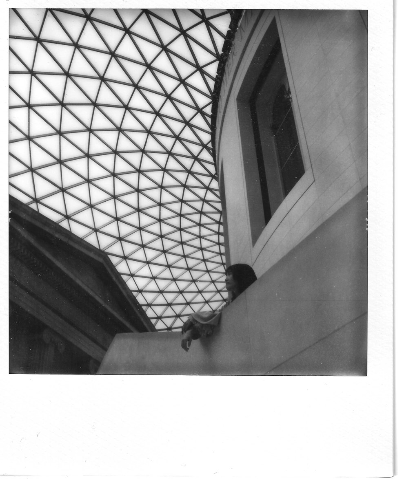
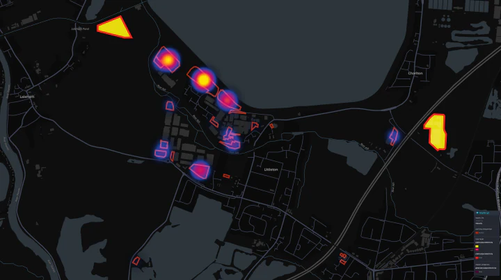
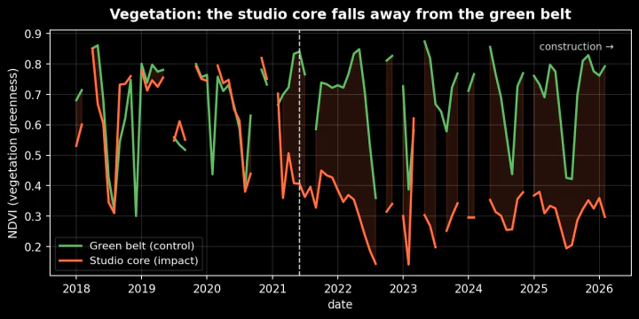
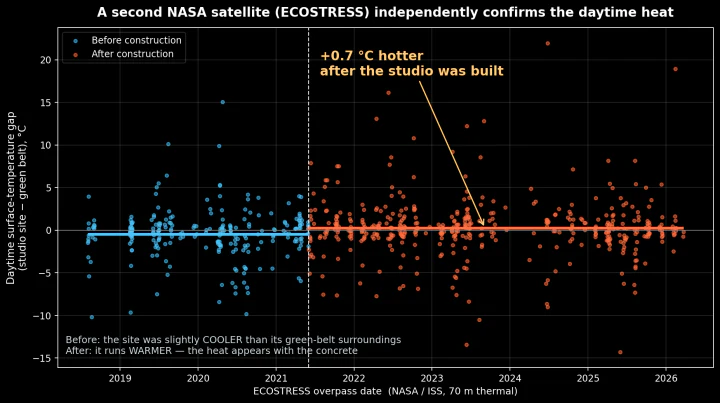
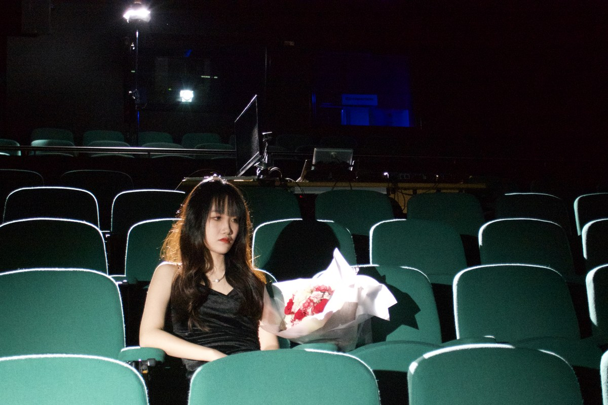
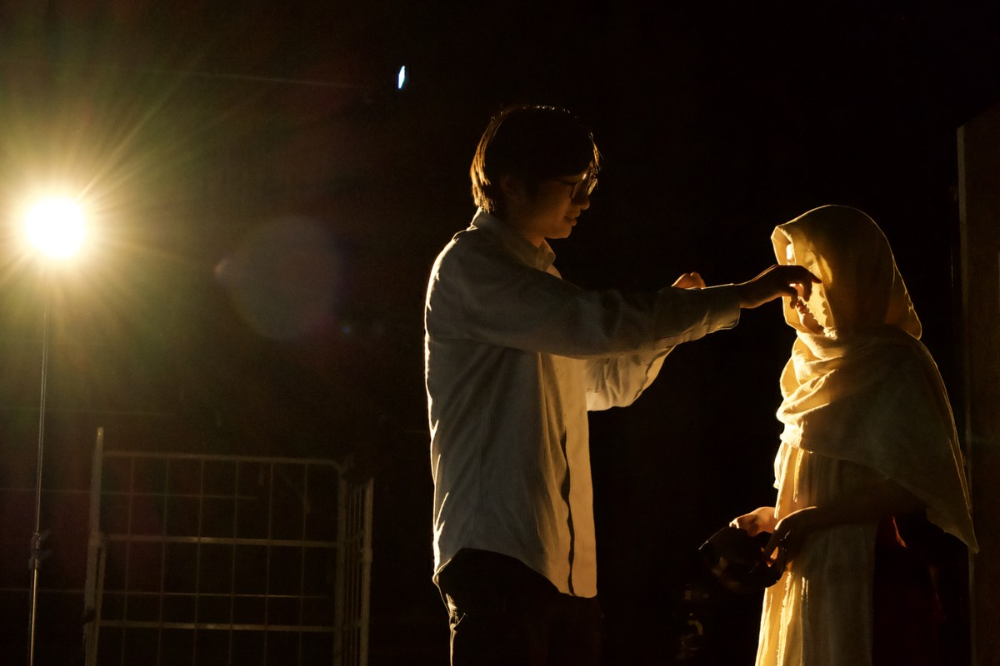
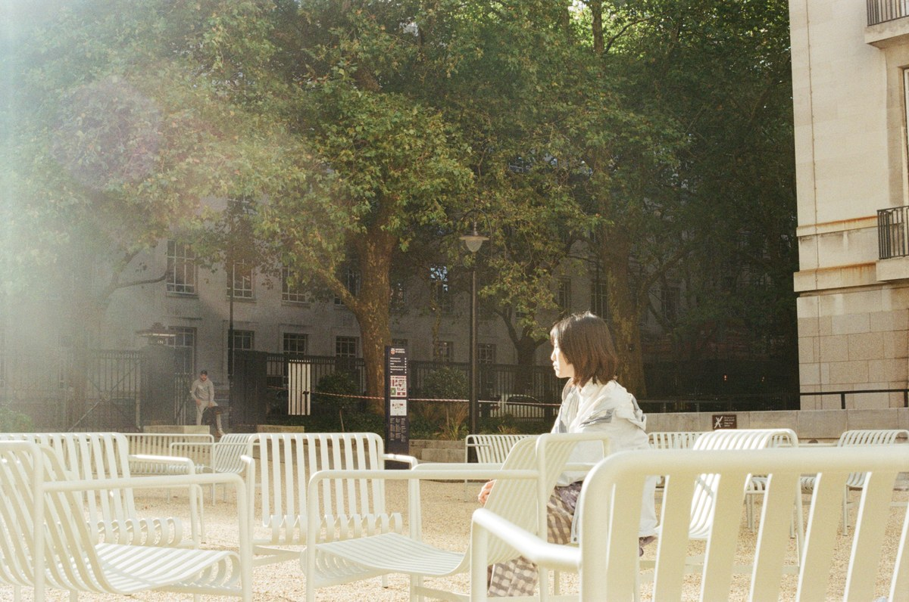
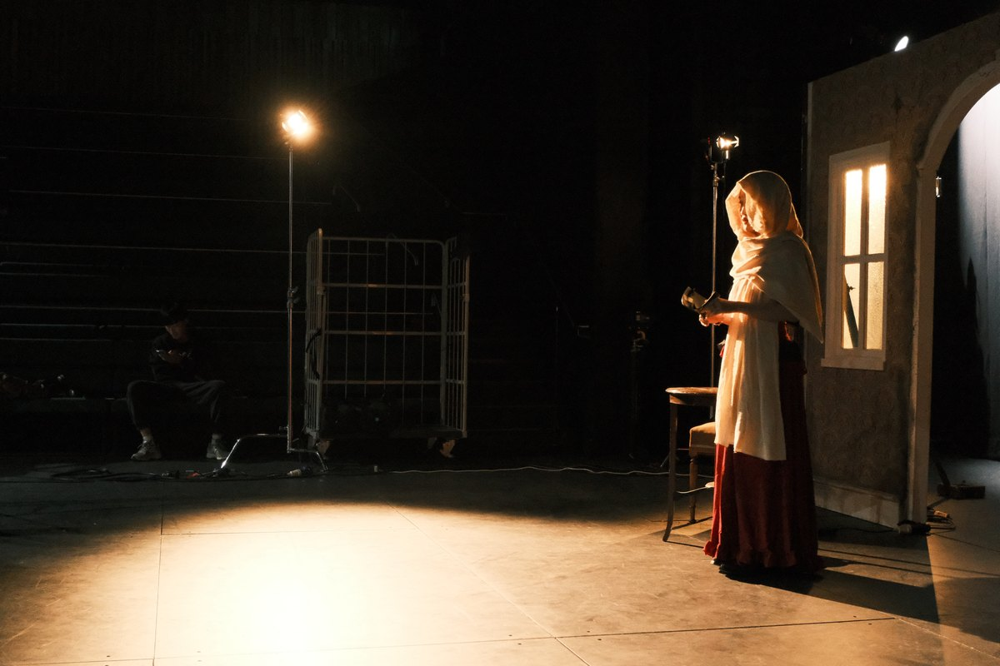
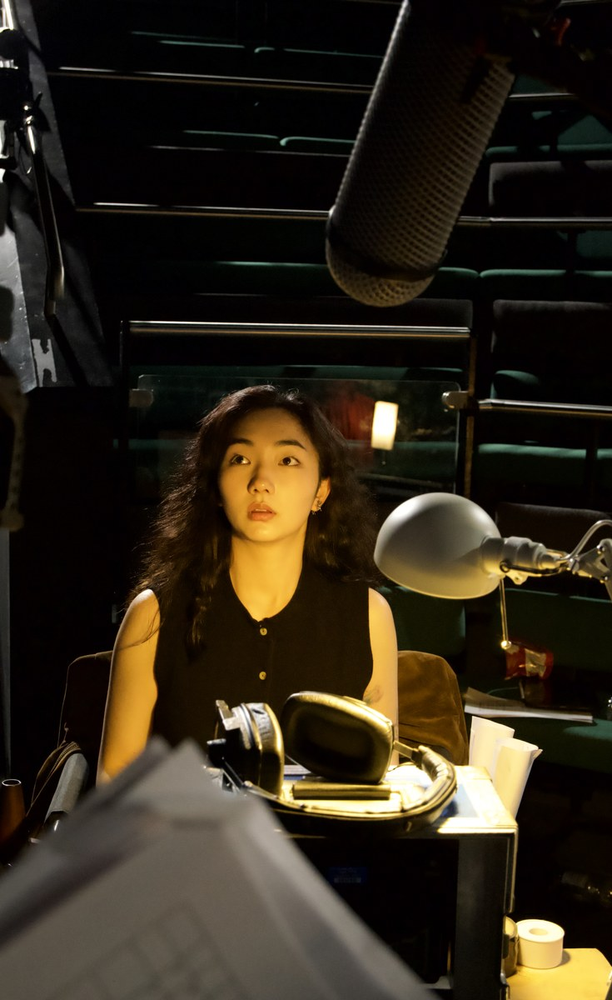
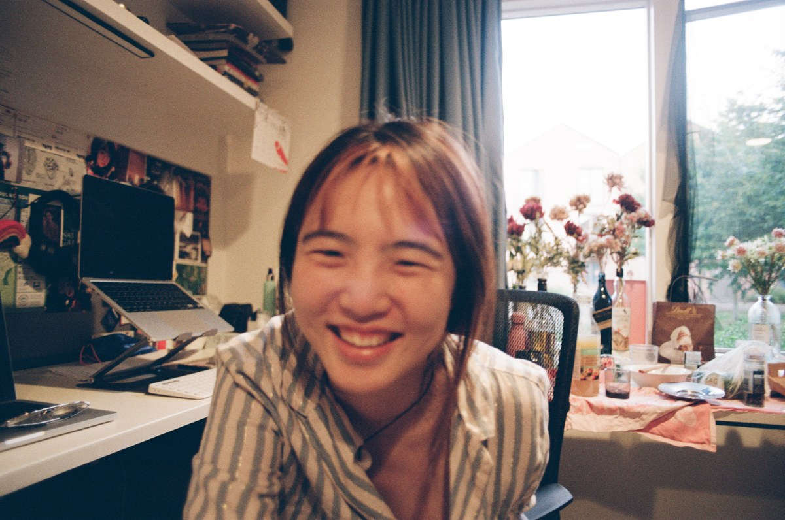

01.1
On Takashi Miike’s First Love
A long-form study of gender, obligation and genre form in Takashi Miike’s First Love, combining close formal analysis with reproducible checks.
writing / film / photos / code · london
李函璞
also works as Caitlyn Lye
York · English Language and Linguistics → film · QMUL
London

I watch films. I also write ci.*
Most of my work starts with writing: criticism, research, poetry. I also make photographs, and build software when a method needs a tool.
I care about what gets recorded, what gets left out, and whether the evidence actually supports the claim.
ci, not cis. Neither am I.
01
film / criticism / research
01.1
A long-form study of gender, obligation and genre form in Takashi Miike’s First Love, combining close formal analysis with reproducible checks.
01.2
An essay on voiceover, space, subjection and the limits of its own argument.
02
evidence / tools
research · remote sensing · political economy
A spatial audit of the Shepperton Studios expansion, testing low-carbon discourse against land-cover change, thermal evidence and the planning record.
OSM · Sentinel-2 · Landsat · ECOSTRESS · Python



open source · local execution · MCP
A scoped local execution runtime for MCP clients on macOS: workspace-bound files, sandboxed processes, browser and native UI, explicit Git grants, audit and provenance.
Python · OAuth 2.1 · macOS Seatbelt · Accessibility
poetry · typography · interaction
A poem, issued on receipt paper.
A two-part edition: a fictional till receipt, followed by a voucher carrying the poem. Choose a published work or set your own text in a format made for 58 mm thermal paper.

03
stills / film / Polaroid









Stills, film and Polaroid — mostly the hour before a take.
04
recent / one author / two voices
To the tune of Zhegutian · Several evenings at the lamp, trying to write; unfinished
9 September 2026
two recent pieces
Zhegutian · translation Linjiangxian · translationAlso: Sixteen Poems of A and B, a response cycle written by one author in two voices.
all ci, source text + translation → poem →06
selected chronology
Live television and radio presenting — Zhengding County Television and Hebei Traffic Radio; Spring Festival broadcasts reached audiences above 500,000.
First Prize, Young Presenter Competition.
Commercial, architectural and documentary photography.
Presenter and producer, University Radio York 88.3FM.
On-ground coordination in the rescue of a transgender woman forcibly detained in a conversion-therapy facility in Jinan.
Volunteer writer at Beijing LGBT Center; transgender-support volunteer at Wuhan LGBT Center, including emergency PEP access.
Script supervisor, translator and researcher on University of York productions; two works selected for the 14th Macao International Microfilm Festival and a Golden Rooster screening programme.